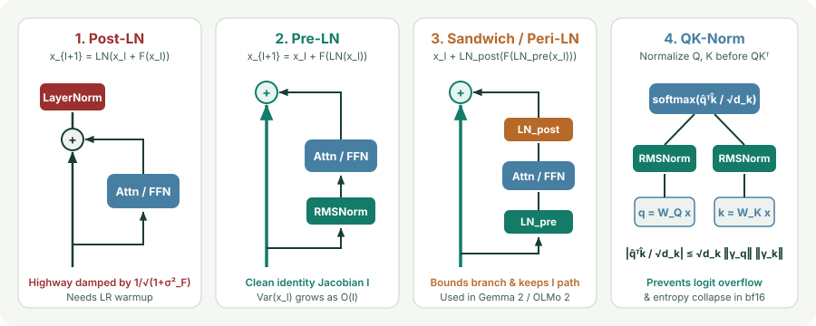

Placement in Transformers: Post-LN vs. Pre-LN, Sandwich-LN, and QK-Norm
Derive Xiong et al.’s expected gradient norms for Post-LN vs. Pre-LN Transformers, explain why Pre-LN residual variance grows linearly with depth ($\operatorname{Var}(x_l)\propto l$), and show how Sandwich-LN and QK-Norm prevent logit explosion at scale.
Moving a LayerNorm or RMSNorm call by a single line of code—from after the residual addition to inside the residual branch—determines whether a 60-layer Transformer diverges on step 10 or trains smoothly without learning-rate warmup. Where you place normalization inside a residual block controls both the forward variance of the residual stream and the backward Jacobian of the skip highway.
1. Post-LN vs. Pre-LN: why Post-LN damps the residual highway
Let $F_l(\cdot)$ denote a Transformer sublayer (Multi-Head Attention or FFN) at layer $l\in\{1,\dots,L\}$. Compare the two classic placements:
Why does Post-LN require thousands of steps of small-learning-rate warmup whereas Pre-LN trains stably from step $1$? Follow the variance and backward Jacobian at initialization (Xiong et al., 2020):
- In Post-LN, every layer divides the skip highway by $\sqrt{1+\sigma_F^2}$: Suppose at initialization $\operatorname{Var}(x_l) = 1$ and the sublayer output $F_l(x_l)$ is approximately independent of $x_l$ with variance $\sigma_F^2 > 0$. Then the unnormalized sum $u_l = x_l + F_l(x_l)$ has variance $\operatorname{Var}(u_l) = 1 + \sigma_F^2 > 1$. LayerNorm divides $u_l$ by $\sigma(u_l) \approx \sqrt{1+\sigma_F^2}$ to reset $\operatorname{Var}(x_{l+1}) = 1$. During backpropagation, the Jacobian $\frac{\partial x_L}{\partial x_l}$ must pass through $L-l$ consecutive Post-LN denominators:
$$\frac{\partial x_{l+1}}{\partial x_l}\Big|_{\text{Post-LN}} = \frac{\partial\operatorname{LN}(u_l)}{\partial u_l}\left(I + \frac{\partial F_l(x_l)}{\partial x_l}\right) \approx \frac{1}{\sqrt{1+\sigma_F^2}}\left(I + \frac{\partial F_l(x_l)}{\partial x_l}\right).$$Across $L-l$ layers, the direct skip path from $x_L$ back to $x_l$ is attenuated exponentially by $(1+\sigma_F^2)^{-(L-l)/2}$. Consequently, in Post-LN at initialization, the top layer $l=L$ has an $O(1)$ gradient norm while early layers $l\ll L$ have vanishing gradients—forcing you to use a tiny learning rate (warmup) until the top layers adapt!
- In Pre-LN, the skip highway has an exact identity Jacobian $I$: Unrolling the Pre-LN recurrence from $l$ to $L$ gives
$$x_L = x_l + \sum_{k=l}^{L-1} F_k\!\bigl(\operatorname{LN}(x_k)\bigr)\implies \frac{\partial x_L}{\partial x_l}\Big|_{\text{Pre-LN}} = I + \sum_{k=l}^{L-1}\frac{\partial F_k(\operatorname{LN}(x_k))}{\partial x_l}.$$Because LayerNorm sits inside the branch $F_k(\operatorname{LN}(x_k))$ rather than on the main highway, gradients flow unimpeded through the identity matrix $I$ to every layer $l\in\{1,\dots,L\}$ on step $1$.

2. The Pre-LN depth trap ($\operatorname{Var}(x_l)\propto l$) and Sandwich / Peri-LN
Pre-LN’s clean identity highway comes with a subtle forward-pass trade-off: because each sublayer receives a normalized input $\operatorname{LN}(x_l)$ of unit variance and adds an unnormalized output $F_l(\operatorname{LN}(x_l))$ of variance $\sigma_F^2$ onto the residual stream, the residual stream variance accumulates linearly with depth $l$:
In a very deep Pre-LN network ($L\ge 64$), two failure modes emerge if branch outputs are left unscaled:
- Deep-layer dilution: At layer $l=60$, the residual stream $x_l$ has standard deviation $\sqrt{l}\approx 7.7$, while the branch output $F_l(\operatorname{LN}(x_l))$ has standard deviation $O(1)$. Furthermore, the backward Jacobian of $\operatorname{LN}(x_l)$ scales inversely with $\sigma(x_l)\propto 1/\sqrt{l}$, so deep layers contribute less and less relative to early layers.
- Branch activation spikes in bf16: During large-scale multimodal or LLM pretraining, an unnormalized FFN or Attention branch output $F_l(\operatorname{LN}(x_l))$ can experience a sudden norm spike that gets injected directly into the residual stream.
Sandwich-LN / Peri-LN (Ding et al., CogView 2021; Gemma 2; OLMo 2) fixes both issues without sacrificing the identity skip path by wrapping each sublayer $F_l$ with both a pre-normalization and a post-branch normalization:
Here $\operatorname{RMSNorm}_{\text{pre}}$ ensures the input to $F_l$ is unit-scale, while $\operatorname{RMSNorm}_{\text{post}}$ caps the norm of the branch update before it touches the residual highway $x_l$—keeping the skip connection’s identity term $I$ completely intact!
3. QK-Norm: bounding attention logits and preventing entropy collapse
Even with Pre-LN or Sandwich-LN, standard scaled dot-product attention has an unnormalized quadratic bottleneck! Inside a head of dimension $d_k$, queries $q_i = W_Q\operatorname{LN}(x_i)$ and keys $k_j = W_K\operatorname{LN}(x_j)$ are linear projections whose norms grow as $\|W_Q\|_2$ and $\|W_K\|_2$ grow during training. Because the attention score $s_{ij} = \frac{q_i^\top k_j}{\sqrt{d_k}}$ is bilinear in $(W_Q,W_K)$:
- If $\|W_Q\|_2$ and $\|W_K\|_2$ each grow by $5\times$, the attention logits $s_{ij}$ grow by $25\times$, pushing softmax into complete saturation ($\max_j \alpha_{ij}\to 1$, attention entropy $H(\alpha_i)\to 0$) where $\nabla\operatorname{softmax}\approx 0$, or overflowing `float16`.
QK-Norm (Dehghani et al., ViT-22B 2023; Chameleon; Gemma 2/3) places an RMSNorm (or LayerNorm) directly on $q_i$ and $k_j$ before computing $q_i^\top k_j$ (and before applying RoPE rotary embeddings):
Since $\|\bar q_i\|_2 = \sqrt{\sum_{m=1}^{d_k}\bar q_{i,m}^2} \le \sqrt{d_k}$ and $\|\hat q_i\|_2 \le \sqrt{d_k}\|\gamma_q\|_\infty$, the Cauchy–Schwarz inequality guarantees a strict upper bound on every attention logit regardless of how large $W_Q$ and $W_K$ become:
import torch
import torch.nn as nn
import torch.nn.functional as F
class QKNormAttention(nn.Module):
def __init__(self, d_model: int, n_heads: int):
super().__init__()
self.n_heads = n_heads
self.d_k = d_model // n_heads
self.qkv = nn.Linear(d_model, 3 * d_model, bias=False)
self.q_norm = nn.RMSNorm(self.d_k, eps=1e-6)
self.k_norm = nn.RMSNorm(self.d_k, eps=1e-6)
self.proj = nn.Linear(d_model, d_model, bias=False)
def forward(self, x: torch.Tensor) -> torch.Tensor:
B, T, D = x.shape
q, k, v = self.qkv(x).chunk(3, dim=-1)
q = self.q_norm(q.view(B, T, self.n_heads, self.d_k)).transpose(1, 2)
k = self.k_norm(k.view(B, T, self.n_heads, self.d_k)).transpose(1, 2)
v = v.view(B, T, self.n_heads, self.d_k).transpose(1, 2)
out = F.scaled_dot_product_attention(q, k, v, is_causal=True)
return self.proj(out.transpose(1, 2).contiguous().view(B, T, D))4. Questions worth answering
Because in Pre-LN, the residual stream $x_L = x_0 + \sum_{l=0}^{L-1}F_l(\operatorname{LN}(x_l))$ is never normalized on the main highway, so its variance grows as $\Theta(L)$ and its scale fluctuates during training. Placing a final $\operatorname{LN}(x_L)$ before $W_{\text{vocab}}$ stabilizes the logit scale entering the cross-entropy loss.
Before RoPE (or using RMSNorm, which commutes with orthogonal 2D rotations only if $\gamma$ is shared within each 2D frequency pair). Because standard element-wise $\gamma_q,\gamma_k$ scales individual coordinates anisotropically, applying QK-Norm immediately after $W_Q,W_K$ and then applying RoPE preserves exact relative-position rotation invariance.
Sources
Xiong et al., On Layer Normalization in the Transformer Architecture (ICML 2020); Ding et al., CogView: Mastering Text-to-Image Generation via Transformers (NeurIPS 2021); Dehghani et al., Scaling Vision Transformers to 22 Billion Parameters (ICML 2023).